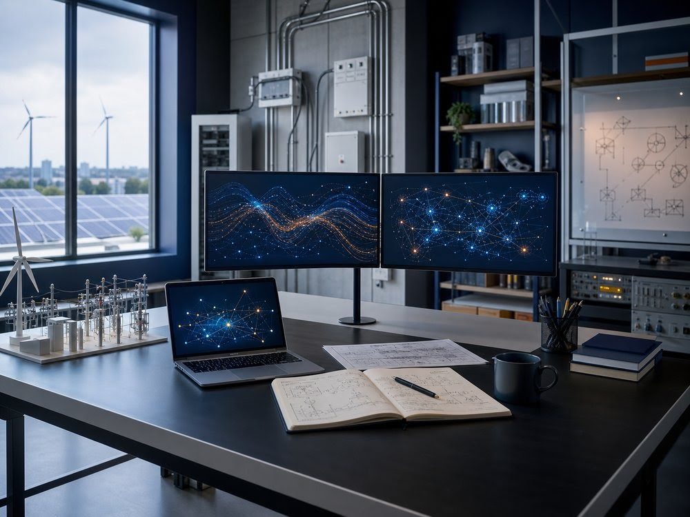

About Us
에너지 시스템을 이해하고, 더 나은 운영을 설계합니다.
에너지정보처리연구실은 전력설비와 산업 현장의 데이터를 정밀하게 측정하고, 이를 AI와 그래프 기반 방법으로 해석하여 설비의 이상을 미리 찾아내는 기술을 연구합니다.
반사파 계측 기반의 전력설비 진단에서 출발해 산업 AI, 네트워크 분석, 차세대 에너지 시스템으로 연구를 넓혀 가며, 연구 성과를 실제 현장에 적용 가능한 해법으로 연결하고자 합니다.

DATA-DRIVEN INTELLIGENCE데이터 기반 지능화
PHYSICS-INFORMED MODELING물리 기반 모델링
SUSTAINABLE OPTIMIZATION지속가능한 최적화
Research Areas
[① 전력설비 진단
그림 · 16:10]
01 · Power Asset Diagnostics
전력설비 진단
반사파 계측과 광대역 임피던스 분광으로 송배전·초전도·해상풍력 케이블과 전력설비의 열화 상태와 고장 위치를 정밀하게 진단합니다. 계측 신호에서 건전성 지표를 도출하고, 강화학습으로 계측을 자동화하며, 그래프 신경망으로 케이블 네트워크 전체를 진단합니다.
Reflectometry · Impedance Spectroscopy · Fault Location · Graph Neural Network
[② 산업 AI·이상 탐지
그림 · 16:10]
02 · Industrial AI & Anomaly Detection
산업 AI·이상 탐지
전력설비, 공장 공정, 반도체·디스플레이 검사 등 다양한 산업 데이터에서 이상 징후를 탐지하고, 생성 모델과 시계열 모델로 설비의 잔존수명을 예측하는 AI 기술을 개발합니다.
Anomaly Detection · RUL Prediction · Time-series AI · Vision Inspection
[③ 스마트 안전·방재
그림 · 16:10]
03 · Smart Safety & Disaster Prevention
스마트 안전·방재
전기설비의 아크 고장과 열화처럼 화재로 이어질 수 있는 위험 신호를 조기에 탐지하고, 그래프 이론을 활용해 건물 화재 상황에서 안전한 피난 경로를 분석합니다.
Arc Fault Detection · Fire Risk · Graph-based Evacuation · Safety Analytics
[④ 지능형 에너지 시스템
그림 · 16:10]
04 · Intelligent Energy Systems
지능형 에너지 시스템
HVDC·비송전대안(NWA) 등 차세대 전력망과 공장 에너지 관리(FEMS)를 대상으로, 디지털 트윈과 데이터 기반 모델을 활용한 최적 운영 기술을 연구합니다.
HVDC · Non-Wires Alternatives · FEMS · Digital Twin
연구 과제 보기 →